告警明细
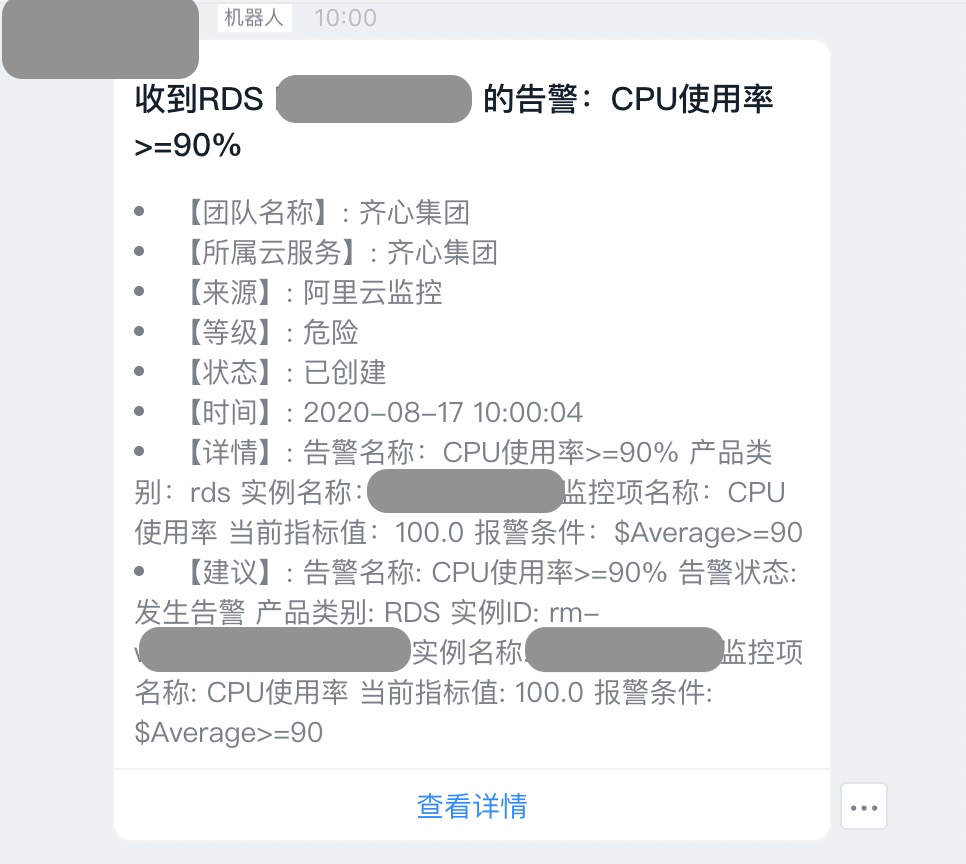
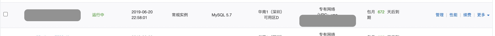
信息搜集
实例信息
基本信息
| 实例ID：rm-xx |
名称： xx-DB |
|
|
| 地域可用区：华南1（深圳）可用区D |
类型及系列：常规实例 (高可用版) |
|
|
| 存储类型：本地SSD盘 |
|
|
|
| 内网地址：xx |
内网端口：3306 |
|
|
| 运行状态：运行中 |
计费方式：包月672天后到期 ( 自动续费[取消] ) |
创建时间：2019-06-20 22:58:01 |
|
|
|
|
| 规格族：通用型 |
数据库类型：MySQL 5.7 |
CPU：4核 |
| 数据库内存：8192MB |
最大IOPS：5000 |
最大连接数：2000 |
| 可维护时间段：02:00-06:00 |
实例规格：rds.mysql.s3.large |
使用量统计
| 存储空间：已使用 44.37G(共150.00G) |
备份使用量：数据46.32G，归档备份0.00K, 日志8.58G（总量在76800MB 以内免费） |
| SQL采集量：0.00K |
监控信息
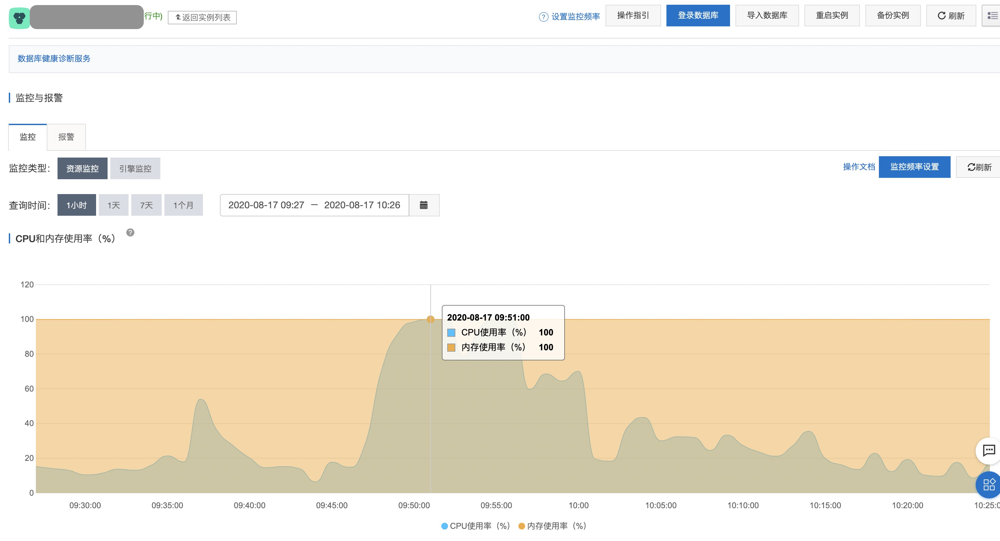
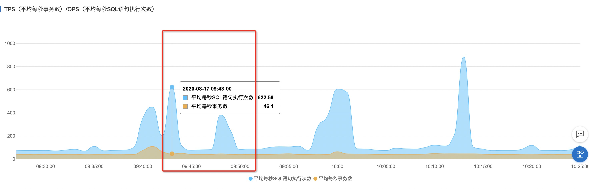
CPU问题出现时间段：9:45～10:00
该时段的 TPS和QPS没有与CPU呈现一致的趋势，可以初步判断，业务上没有压力。
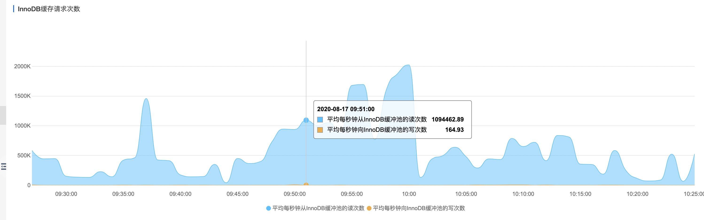
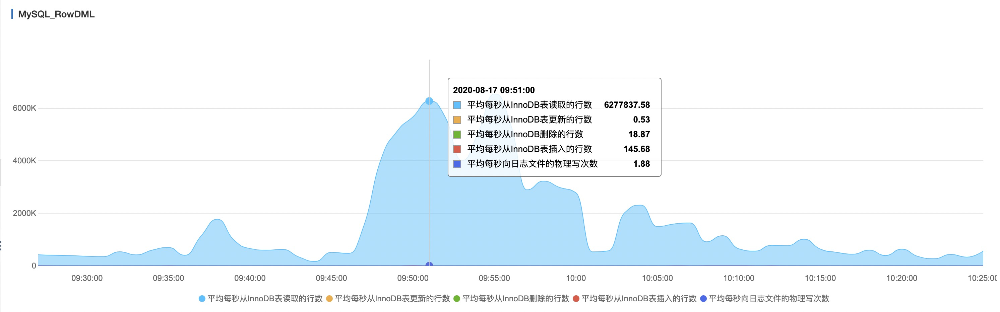
从存储引擎的监控看出，此时数据库读取的行数非常多，读次数非常高。
该时间段没有锁冲突，基本可以确定慢SQL导致。
自治服务（原CloudDBA性能分析）
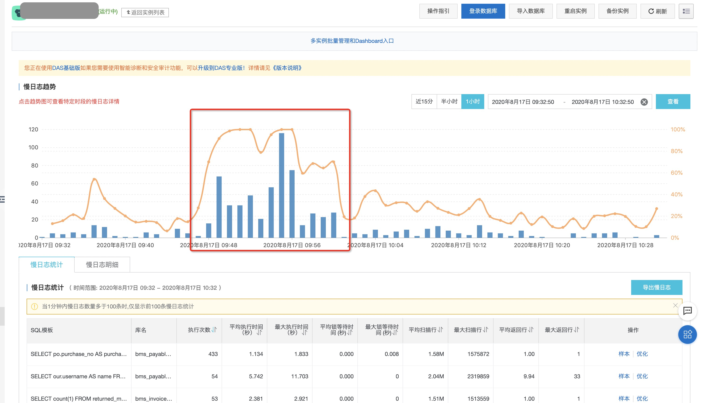
慢SQL趋势与CPU趋势一致。
日志服务-慢SQL统计
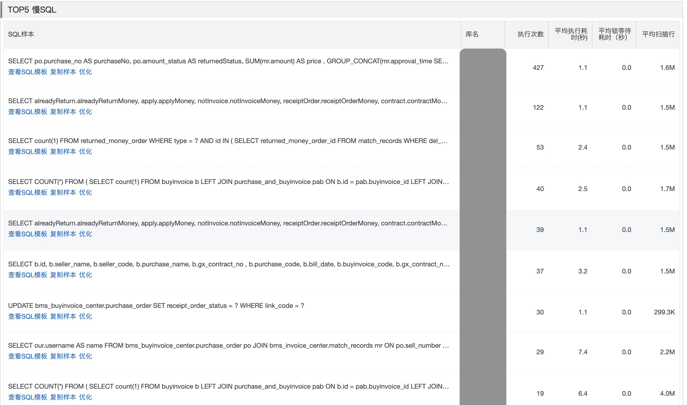
RDS SQL优化
创建驻云DBA专用的只读账号，并在报告完成后删除。
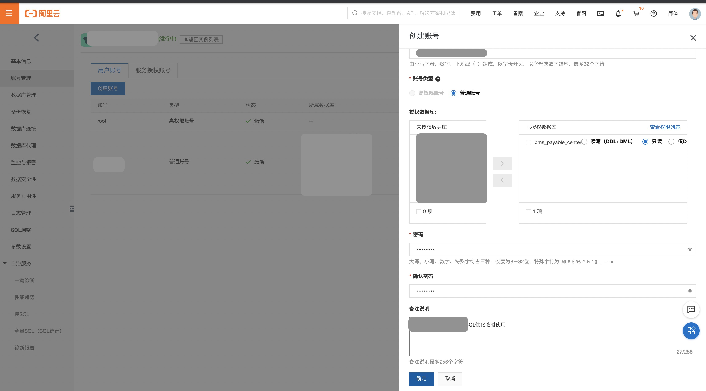
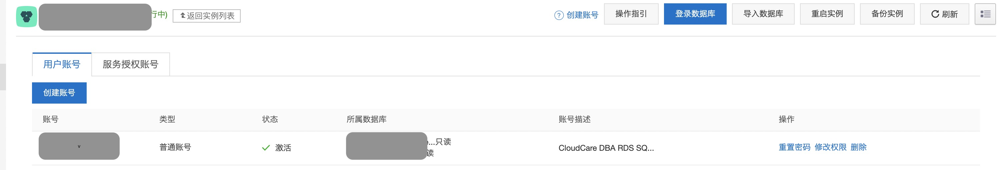
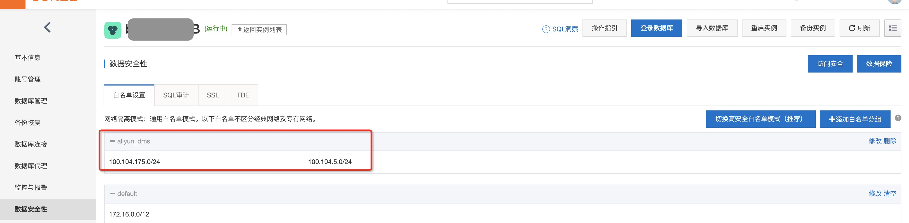
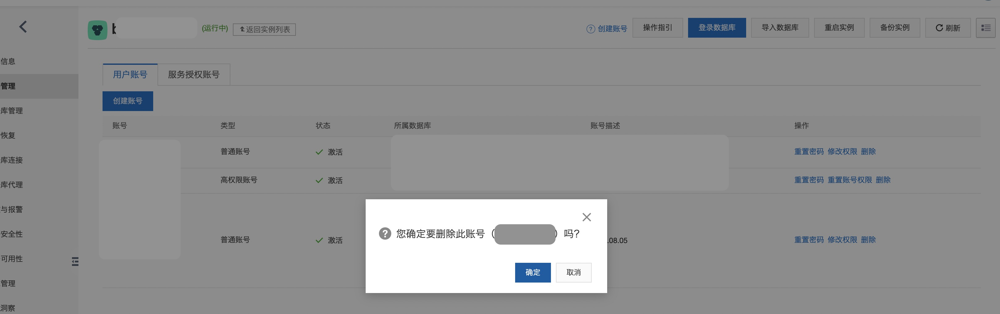
Top1-SQL优化
select po.purchase_no purchaseNo,
po.amount_status returnedStatus,
SUM(mr.amount) price,
GROUP_CONCAT(mr.approval_time SEPARATOR ',') returnedDate,
mr.settle_org department,
mr.settle_org_code settleOrgCode,
GROUP_CONCAT(distinct (rmo.type) SEPARATOR ',') returnedType,
GROUP_CONCAT(distinct (i.invoice_number) SEPARATOR ',') invoiceNumber,
rmo.order_status orderStatus,
rmo.pay_mode payMethod
from bms_buyinvoice_center.purchase_order po
left join bms_invoice_center.match_records mr on po.sell_number = mr.sap_order_no and mr.del_flag = 0
and mr.status = 3
and mr.del_flag = 0
left join bms_invoice_center.returned_money_order rmo on mr.returned_money_order_id = rmo.id and rmo.del_flag = 0
left join bms_invoice_center.invoice i on i.id = mr.invoice_id
where po.purchase_no = '3101133355'
GROUP BY po.purchase_no;
--- 统计信息
库名 :
bms_buyinvoice_center
bms_invoice_center
执行次数 : 427
平均执行耗时(秒) : 1.1
平均锁等待耗时（秒） : 0.0
平均扫描行 : 1.6M
--- 信息索取
1. 表
bms_buyinvoice_center.purchase_order 采购单表 po
bms_invoice_center.match_records 匹配关系 mr
bms_invoice_center.returned_money_order 回款单 rmo
bms_invoice_center.invoice 发票 i
2. 执行计划
RDS资源正常的情况下SQL执行的时间 : 1002ms
+--------------+-----------------------+-----------------+----------------------+----------------+-------------------------+---------------+-------------------+-----------------------------------------------+----------------+--------------------+-----------------+
| id | select_type | table | partitions | type | possible_keys | key | key_len | ref | rows | filtered | Extra |
+--------------+-----------------------+-----------------+----------------------+----------------+-------------------------+---------------+-------------------+-----------------------------------------------+----------------+--------------------+-----------------+
| 1 | SIMPLE | po | | const | no-unique | no-unique | 767 | const | 1 | 100.00 | |
| 1 | SIMPLE | mr | | ALL | status_nk | | | | 1458735 | 100.00 | Using where |
| 1 | SIMPLE | rmo | | eq_ref | PRIMARY | PRIMARY | 8 | bms_invoice_center.mr.returned_money_order_id | 1 | 100.00 | Using where |
| 1 | SIMPLE | i | | eq_ref | PRIMARY | PRIMARY | 8 | bms_invoice_center.mr.invoice_id | 1 | 100.00 | |
+--------------+-----------------------+-----------------+----------------------+----------------+-------------------------+---------------+-------------------+-----------------------------------------------+----------------+--------------------+-----------------+
执行计划中可以看出，优化器选择了mr表为基表
select count(*) from bms_invoice_center.match_records mr where mr.del_flag = 0
and mr.status = 3
and mr.del_flag = 0;
mysql>select count(*) from bms_invoice_center.match_records mr where mr.del_flag = 0
and mr.status = 3
and mr.del_flag = 0;
+--------------------+
| count(*) |
+--------------------+
| 1308346 |
+--------------------+
返回行数: [1], 耗时: [792ms]
mysql>desc select count(*) from bms_invoice_center.match_records mr where mr.del_flag = 0
and mr.status = 3;
+--------------+-----------------------+-----------------+----------------------+----------------+-------------------------+---------------+-------------------+---------------+----------------+--------------------+-----------------+
| id | select_type | table | partitions | type | possible_keys | key | key_len | ref | rows | filtered | Extra |
+--------------+-----------------------+-----------------+----------------------+----------------+-------------------------+---------------+-------------------+---------------+----------------+--------------------+-----------------+
| 1 | SIMPLE | mr | | ALL | status_nk | | | | 1458744 | 1.00 | Using where |
+--------------+-----------------------+-----------------+----------------------+----------------+-------------------------+---------------+-------------------+---------------+----------------+--------------------+-----------------+
返回行数: [1], 耗时: [56ms]
3. 索引分析
该语句的问题：
1. 重复的过滤条件 del_flag=0
2. 没有走索引，而是全表扫描，行数145w，而返回的函数只有1行
alter table bms_invoice_center.match_records add index idx_del_flag_status (del_flag,status);
4. 测试验证
desc select count(*) from qixin.match_records mr where mr.del_flag = 0 and mr.status = 3;
alter table qixin.match_records add index idx_del_flag_status (del_flag,status);
测试环境中，通过添加复合索引，优化SQL的执行计划，提高SQL执行效率。
|
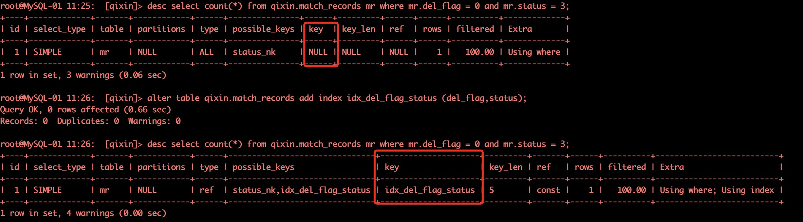
优化建议
Top1-慢SQL明细
select po.purchase_no purchaseNo,
po.amount_status returnedStatus,
SUM(mr.amount) price,
GROUP_CONCAT(mr.approval_time SEPARATOR ',') returnedDate,
mr.settle_org department,
mr.settle_org_code settleOrgCode,
GROUP_CONCAT(distinct (rmo.type) SEPARATOR ',') returnedType,
GROUP_CONCAT(distinct (i.invoice_number) SEPARATOR ',') invoiceNumber,
rmo.order_status orderStatus,
rmo.pay_mode payMethod
from bms_buyinvoice_center.purchase_order po
left join bms_invoice_center.match_records mr on po.sell_number = mr.sap_order_no and mr.del_flag = 0
and mr.status = 3
and mr.del_flag = 0
left join bms_invoice_center.returned_money_order rmo on mr.returned_money_order_id = rmo.id and rmo.del_flag = 0
left join bms_invoice_center.invoice i on i.id = mr.invoice_id
where po.purchase_no = '3101133355'
GROUP BY po.purchase_no;
|
SQL特点：执行次数最多，扫描行数最多。
Top1-慢SQL优化建议
该语句的问题主要在 bms_invoice_center.match_records mr 表
1. 重复的过滤条件 del_flag=0
2. 没有走索引，而是全表扫描，行数145w，而返回的行数只有1行
优化建议：
建议添加复合索引来提高SQL的执行效率
alter table bms_invoice_center.match_records add index idx_del_flag_status (del_flag,status);
|
注意：
可以先在开发环境中做验证，确认后，选择业务低峰期执行。